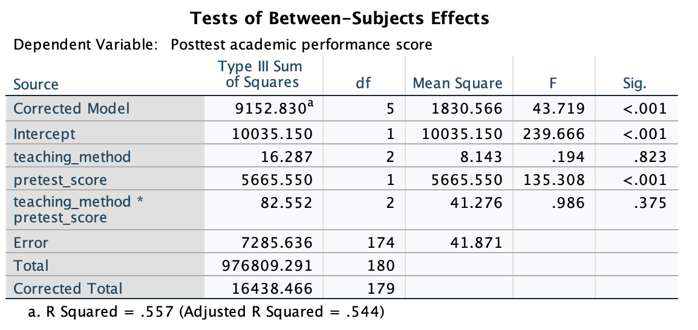
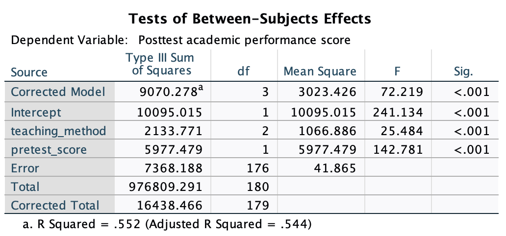

Analysis of Covariance
1. Introduction
Every ANOVA design covered in this series has treated the outcome as a function of one or more categorical factors. But research participants are rarely identical to one another before a study begins. They bring prior knowledge, different levels of ability, and other characteristics that affect the outcome regardless of which group they were assigned to. When that background variation is large, it can drown out the effect you actually care about, making your \(F\) test less powerful and your group mean estimates less accurate.
Analysis of covariance, or ANCOVA, addresses this by incorporating one or more continuous variables alongside the categorical factor. These continuous variables are called covariates. Adding a covariate accomplishes two things at once. First, it absorbs variance in the outcome that would otherwise end up in the error term, shrinking \(SS_{Error}\) and producing a more powerful test. This is the same logic behind adding predictors to a regression model: the more of the outcome you can account for, the less unexplained noise remains. Second, it adjusts the group means to reflect what they would have been had all groups started at the same covariate value. This adjustment is especially valuable in non-randomized studies, where groups may have differed on the covariate before the intervention ever took place. This is akin to interpreting a regression slope while controlling for the other predictors in the model.
In full/reduced model terms, ANCOVA compares a full model that includes both the factor and the covariate against a reduced model that includes only the covariate. The question is whether adding the factor explains a meaningful amount of additional variance in the outcome after the covariate has already been accounted for.
Throughout this lesson we will work with a fictional study examining whether teaching method affects student performance on a statistics exam. Students were assigned to one of three methods: traditional lecture, active learning, or AI-supported practice. Because students enter the course with different levels of prior knowledge, each student also completed a pretest before instruction began. The pretest score is the covariate, and the posttest score recorded at the end of the course is the outcome. The dataset contains 180 students and is stored in ANCOVA.sav. The relevant variables are teaching_method (1 = traditional lecture, 2 = active learning, 3 = AI-supported practice), pretest_score, and posttest_score. The central research question is: after controlling for pretest performance, do students in the three teaching methods differ in posttest performance? Note that this data is mostly made up, so do not think the resuls of the tests we will conduct is indicative of the research question in practice.
2. Assumptions
ANCOVA inherits the usual ANOVA assumptions: independence of observations, normality of residuals, and homogeneity of error variance across groups. However, it also adds two of its own.
The first is linearity: the relationship between the covariate and the outcome must be linear within each group. If the covariate and outcome are related in a curved or non-monotonic way, the standard ANCOVA adjustment will be wrong. In the teaching method study, linearity means that as pretest scores increase, posttest scores should increase at a roughly constant rate within each group. A violation would look something like this: students with very low pretest scores perform poorly on the posttest, students with moderate pretest scores improve substantially, but students with very high pretest scores plateau because they had little room left to grow. That kind of curved relationship cannot be captured by a straight line, and ANCOVA would produce adjusted group means that misrepresent where each group actually stands.
The second is homogeneity of regression slopes: the relationship between the covariate and the outcome must be the same in every group. In other words, there should be no interaction between the covariate and the factor. In the teaching method study, a violation might look like this: pretest score is a strong predictor of posttest score in the traditional lecture group, because students who came in knowing more were better equipped to absorb a lecture-heavy format, while students who came in knowing less fell further behind. But in the AI-supported practice group, the software adapts to each student’s level, so high and low pretest scorers end up with similar posttest gains regardless of where they started. The slope relating pretest to posttest would then be steep in the lecture group and shallow in the AI group. Controlling for pretest score would require a different adjustment for each group, which is a fundamentally different kind of model than standard ANCOVA assumes.
Homogeneity of regression slopes is not assumed without scrutiny. It is tested directly, and the result of that test determines how you proceed. If homogeneity holds, you can estimate and interpret the covariate-adjusted group means as a summary of the treatment effect. If it does not hold, the relationship between the factor and the outcome depends on the covariate value, and more complex modeling is needed.
Because the homogeneity test must come before the treatment test, the two analyses are run in a specific order. That order is the backbone of this lesson.
3. Testing Homogeneity of Regression Slopes
Before estimating the teaching method effect, we need to verify that the relationship between pretest score and posttest score is consistent across the three groups. If that relationship differs by group, the covariate is interacting with the factor, and the standard ANCOVA model is not appropriate.
In full/reduced model terms, the homogeneity test compares:
Full model: \[Y\_{ij} = \mu + \alpha_j + \beta_1 X_{ij} + \beta_2* \alpha_j X_{ij} + \varepsilon_{ij}\]
Reduced model: \[Y\_{ij} = \mu + \alpha_j + \beta_1 X_{ij} + \varepsilon_{ij}\]
Here \(\mu\) is the grand mean, \(\alpha_j\) is the effect of the* \(j\)th level of the teaching method factor, \(X_{ij}\) is the pretest score for participant \(i\) in group \(j\), \(\beta_1\) is the overall slope relating pretest to posttest, and \(\beta_2\) captures how that slope differs across groups. The null hypothesis is \(\beta_2 = 0\): the covariate slope is the same in every group.
This full model is sometimes called the interaction model because it includes the product of the factor and the covariate. In SPSS, fitting it requires building the model terms manually rather than using the default full factorial option.
SPSS Syntax
To run the homogeneity test, use UNIANOVA with a custom model specification. The /DESIGN subcommand must include the factor, the covariate, and their interaction term explicitly:
UNIANOVA posttest_score BY teaching_method WITH pretest_score
/METHOD = SSTYPE(3)
/DESIGN = teaching_method pretest_score teaching_method*pretest_score.Each line serves a specific purpose:
posttest_score BY teaching_method WITH pretest_score: specifies the outcome (BYintroduces the categorical factor,WITHintroduces the continuous covariate)/METHOD = SSTYPE(3): requests Type III sums of squares, which adjusts each effect for all others in the model/DESIGN = teaching_method pretest_score teaching_method*pretest_score: builds the model with main effects for both the factor and the covariate, plus their interaction term
Note that the factor test row in this output should not be interpreted. Because the interaction term is present, the factor effect shown here is conditional on a specific covariate value rather than averaged across it, which is not the quantity of interest. The only row that matters at this stage is the interaction term.
This means, the only purpose of this syntax is purely to test the interaction. Nothing else should be interpreted
Output

teaching_method * pretest_score (\(p = .375\)) is the only row of interest at this stage.The output contains one row for each term in the model. The teaching_method row and the pretest_score row show the main effects, but neither should be interpreted at this stage. The model here is the full model, and the factor test in a model that includes the interaction term does not answer the question we care about. The only row that matters right now is teaching_method * pretest_score.
That interaction term tests whether the slope relating pretest to posttest differs across teaching method groups. A significant result would indicate that the covariate’s relationship with the outcome depends on which group a student was in, which would violate the homogeneity assumption and require a different analytic approach. Here the interaction was not significant (\(p = .375\)), meaning we fail to reject the null hypothesis that the slopes are equal across groups. The pretest-to-posttest relationship appears to operate the same way in all three teaching method conditions.
As a final note, if the homogeneity assumption is violated, there are alternative methods that can accommodate a factor-by-covariate interaction, including Johnson-Neyman region of significance analysis, moderated regression, and heterogeneous slopes ANCOVA, though these fall outside the scope of this lesson.
5. Testing the Teaching Method Effect
Having confirmed homogeneity of regression slopes, we can now test whether teaching method affects posttest scores after controlling for pretest performance. This is the ANCOVA proper.
The full/reduced comparison here is different from the one in the previous step. Now the factor is the target of the test:
Full model: \[Y\_{ij} = \mu + \alpha_j + \beta_1 X_{ij} + \varepsilon_{ij}\]
Reduced model: \[Y\_{ij} = \mu + \beta_1 X_{ij} + \varepsilon_{ij}\]
The full model includes both the factor and the covariate. The reduced model includes only the covariate. The null hypothesis is \(\alpha_j = 0\): after accounting for pretest scores, all three teaching method groups have the same posttest mean. The \(F\) test compares how much additional variance the factor accounts for beyond what the covariate already explains.
This model is the reduced model from the homogeneity test: the one without the interaction term. In SPSS, it is fit using the default full factorial option, since no custom interaction needs to be specified.
SPSS Syntax
UNIANOVA posttest_score BY teaching_method WITH pretest_score
/METHOD = SSTYPE(3)
/DESIGN = teaching_method pretest_score.The structure is nearly identical to the previous syntax, with one important difference: the interaction term teaching_method*pretest_score is removed from /DESIGN. The model now contains only the main effects of the factor and the covariate.
teaching_methodin/DESIGN— the factor whose effect we are testingpretest_scorein/DESIGN— the covariate being controlled for/METHOD = SSTYPE(3)— each effect is adjusted for the other, so the teaching method test is net of the pretest score relationship
Output

teaching_method row is the test of primary interest.The output table contains one row for each term in the model. Comparing this table to the interaction model output from the previous step, you will notice the interaction term is gone and the error degrees of freedom have increased from 174 to 176, recovering the two degrees of freedom that were spent estimating the interaction. This is the reduced model, and it is the correct one to use for interpreting the teaching method effect.
The pretest_score row confirms that the covariate is doing meaningful work. Pretest performance was strongly related to posttest performance (\(p < .001\)), which means the ANCOVA adjustment is both appropriate and consequential. Students who entered with stronger prior knowledge tended to score higher at the end regardless of which group they were in, and the model has accounted for that.
The row of interest is teaching_method. After controlling for pretest score, the teaching method effect was significant (\(p < .001\)). We reject the null hypothesis that the three groups have equal adjusted posttest means. At least one teaching method produced different posttest performance compared to the others, over and above what could be explained by where students started. The model accounts for 55.2% of the variance in posttest scores (\(R^2 = .552\)), with teaching method contributing meaningfully to that explanation after the covariate is partialled out.
The Corrected Model row tests the overall fit of the model. The Corrected Total row provides the total variance in posttest scores available to be explained. The Total row reflects raw sums that include the grand mean and should not be interpreted. The Intercept row tests whether the grand mean differs from zero, which is rarely of substantive interest.
6. MANCOVA
Multivariate analysis of covariance, or MANCOVA, extends ANCOVA to designs with more than one outcome variable. Just as MANOVA tests whether a factor distinguishes groups across a set of outcomes considered jointly, MANCOVA does the same while controlling for one or more continuous covariates.
The logic is identical to what you have seen in this lesson. A covariate is included to reduce error variance and adjust the multivariate group means. The homogeneity of regression slopes assumption extends to the multivariate case: the relationship between each covariate and the full set of outcomes should be consistent across groups.
In SPSS, MANCOVA is specified with the GLM command using WITH to introduce covariates alongside BY for categorical factors. The covariate terms appear in the /DESIGN subcommand alongside the factor and any interaction terms needed for the homogeneity test. The same two-step logic applies: test homogeneity first, then test the factor effect in the reduced model if homogeneity holds.
MANCOVA is relatively uncommon in practice compared to ANCOVA, and the analytic decisions involved, particularly around how to specify the covariate structure in repeated-measures designs, can become complex quickly. The core principles, however, are a direct extension of what you have already learned here.
7. Conclusion
ANCOVA extends the ANOVA framework by incorporating continuous covariates alongside the categorical factor. It reduces error variance and adjusts group mean estimates, producing a more powerful and more interpretable test of the factor effect.
The analysis proceeds in two steps. First, the homogeneity of regression slopes assumption is tested by fitting a model that includes the interaction between the factor and the covariate. If that interaction is not significant, the assumption holds and the main ANCOVA can proceed. Second, the factor effect is tested in a model that includes the factor and the covariate as main effects only, with the interaction removed.
Discussion Questions
Question 1: Why is it important to run the homogeneity test before testing the teaching method effect? What would it mean for your conclusions if the interaction had been significant?
Answer
The homogeneity test establishes whether a single covariate slope can represent the pretest-posttest relationship for all groups. ANCOVA assumes this is the case. If the interaction were significant, the slope would differ across groups, meaning the covariate’s influence on the outcome is moderated by group membership. In that situation, the covariate-adjusted group means would not have a straightforward interpretation, and the standard ANCOVA treatment test would be based on a misspecified model. A significant interaction would instead call for a more flexible approach that allows each group to have its own covariate slope.Question 2: The pretest score row is also significant in this output. Does that mean pretest performance is an important finding in its own right, or should it be interpreted differently in the context of ANCOVA?
Answer
In ANCOVA, the covariate is included as a control variable, not as a target of inference. A significant pretest score row tells you that the covariate was doing real work: it was substantially related to the outcome, which means it absorbed variance that would otherwise have inflated the error term. This is good news because it means the ANCOVA test of teaching method is more powerful than a plain ANOVA would have been. But the covariate result is not itself a finding about teaching methods. Its role is to improve the precision of the teaching method comparison.Question 3: A colleague argues that since the students were randomly assigned to teaching method groups, the pretest scores should be roughly equal across groups anyway, so ANCOVA is unnecessary. How would you respond?